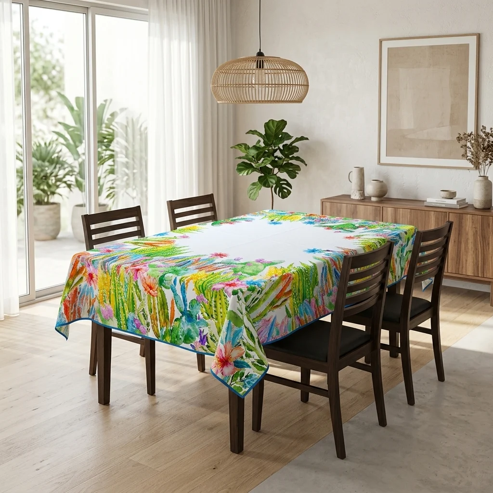

Best Bedding & Linen in Faisalabad: Practical Shopping Guide

Faisalabad is home to a wide range of bedding and linen options, making it a practical destination for shoppers looking to upgrade their home comfort. This guide focuses on the best bedding and linen to buy in Faisalabad, offering insights into what to look for when selecting quality products. The available listings include items like table covers, fitted sheets, and mattress protectors, which reflect a mix of functional and decorative home textiles. While the category is labeled as bedding and linen, some products, such as dining table covers, fall outside the typical scope of bedding. Shoppers should be aware of these differences and focus on items that match their specific needs. The guide highlights key factors like material quality, fit, and care instructions to help buyers make informed decisions.
Quick buying check: Match the actual item to your task, check its measurements or compatibility, and compare the full delivered price. Read the listing and policies before you order. The examples below are catalog evidence, not hands-on test results.
Key benefits of choosing Bedding & Linen carefully
- Better fit for your task: select the specification or design your situation needs.
- Clearer budget: compare the item, delivery and any required extras together.
- Fewer avoidable returns: resolve missing measurements and compatibility questions before ordering.
- More useful ownership: check how the item will be stored, cleaned and used.
Selection criteria and matching the actual task for Bedding & Linen
When selecting bedding and linen in Faisalabad, focus on the specific needs of your household. Consider the climate and how often the items will be used. For example, breathable fabrics are ideal for warmer months, while thicker materials suit colder seasons. Check for durability and comfort, ensuring the fabric type matches your usage. Look for items that fit your bed size and room layout. Avoid choosing based solely on price or brand reputation.
Evaluate the actual task of your purchase to avoid unnecessary expenses. Determine if you need basic sets or premium options with added features. Think about how often you will replace the bedding and whether the product offers good value over time. Compare delivery options and associated costs, especially if buying online. Ensure the product meets your specific requirements, such as hypoallergenic properties or ease of cleaning. Avoid overpaying for features you won’t use.
Always verify the product details against your requirements before purchasing. Check for accurate descriptions and reliable seller information. Be cautious of exaggerated claims and focus on verified benefits. Consider the full cost, including shipping and any additional fees. Ensure the product is suitable for your living conditions and family needs. Avoid assumptions about quality or performance. Make sure the item fits your space and usage patterns.
Fit, dimensions, compatibility or edition checks for Bedding & Linen
Check the fit of bedding by measuring your mattress accurately, including thickness, to ensure the fitted sheet and duvet cover fit properly. In Faisalabad, many local stores offer in-store measurements, but for online purchases, double-check the listed dimensions against your mattress. Look for deep-pocket fitted sheets if you have a thick mattress. Confirm the size of comforters and duvets to match your bed, avoiding gaps or excess fabric.
Verify compatibility with your existing bedding setup by checking thread count, fabric type, and care instructions. In Pakistan, materials like cotton or cotton blends are popular for their breathability, especially in warmer climates. Ensure the color and pattern match your bedroom decor, and confirm if the product is available in the desired design. Some online retailers offer virtual try-ons or detailed images to help with this.
Review edition checks by looking for the latest product versions, as some retailers update their listings with improved designs or materials. In Faisalabad, local stores may have newer stock than online listings, so cross-referencing is helpful. Check for any recent customer feedback about changes in quality or fit. Some online retailers may list older editions, so it’s important to confirm the edition before purchasing. Always ask the seller for the most up-to-date information.
Quality evidence and limitations of listing claims for Bedding & Linen
Quality evidence for listing claims in Faisalabad’s bedding and linen market includes customer reviews, fabric certifications, and seller reputation. Look for detailed product descriptions that mention material composition, thread count, and care instructions. Verify if the seller provides samples or has a return policy. Reliable sources often include local trade associations or verified online platforms. These elements help confirm the accuracy of claims made by sellers.
Limitations of listing claims may involve exaggerated descriptions or incomplete information. Some listings might lack specifics on fabric quality or durability. Buyers should cross-check details with multiple sources or contact sellers directly for clarification. Be cautious of vague terms like “high quality” without supporting data. Always read the fine print to understand what is included in the price and delivery terms. Some sellers may not clearly state return policies or shipping restrictions.
Avoid relying solely on images or brief summaries. Inspect product listings for clear, actionable details that support the claims made. Check for any restrictions on returns or exchanges. Use local market knowledge to assess if the product meets expected standards. Stay informed about common issues reported by other buyers in Faisalabad. This approach helps navigate potential inaccuracies in online listings. Consider visiting physical stores or contacting local vendors for additional insights.
Budget tradeoffs and the full delivered cost for Bedding & Linen
Budget tradeoffs in bedding and linen shopping require careful evaluation of both upfront and long-term costs. Lower-priced options may seem attractive, but they often come with shorter lifespans or inferior comfort, leading to more frequent replacements. In Faisalabad, where demand for quality bedding is high, it's important to assess how often the bedding will be used and what level of durability is needed.
Full delivered cost includes more than just the product price; it encompasses shipping, taxes, and any additional fees. In Pakistan, delivery charges can vary widely depending on the seller and location. Always calculate the total cost before purchasing, especially when comparing online options. Some sellers may offer free delivery for higher order values, which can influence your buying decision and overall budget.
Practical shopping involves checking for hidden costs and understanding return policies. Some sellers may charge extra for cash on delivery or have strict return conditions. Always read the terms carefully to avoid unexpected expenses. This awareness helps in making informed choices that align with both your budget and needs. Additionally, consider the ease of returns and the seller's reputation to ensure a smooth shopping experience.
Setup, care, storage and useful ownership for Bedding & Linen
Setup involves choosing bedding and linen that fits your mattress size and sleep preferences. Measure your mattress accurately and consider fabric type for comfort and durability. Ensure the product matches your bed frame and any specific requirements like hypoallergenic materials. Check for any assembly needs, though most bedding requires no setup beyond unpacking. Look for adjustable or customizable options if you have unique bed dimensions.
Care begins with following the manufacturer’s washing and drying instructions. Use mild detergents and avoid high heat to preserve fabric quality. Sort bedding by color and fabric type before washing. Regularly inspect for wear and tear to maintain hygiene and longevity. Avoid using bleach unless specified by the care label. Wash bedding at least once a week to keep it fresh and free from allergens.
Storage should keep bedding in a cool, dry place away from direct sunlight. Use breathable storage containers or vacuum bags to protect from dust and pests. Keep items organized by season or use to make retrieval easier. Proper storage prevents damage and ensures bedding remains in good condition for future use. Avoid overstuffing storage spaces to prevent wrinkles and compression.
Common mistakes, arrival inspection and returns for Bedding & Linen
Common mistakes when buying bedding and linen in Faisalabad include not verifying fabric quality and thread count. Many buyers overlook the importance of checking material durability and breathability. Always read product descriptions carefully and look for certifications or customer reviews that confirm quality. Avoid relying solely on images or prices, as they may not reflect actual performance. Ensure the product meets your specific needs, such as hypoallergenic properties or temperature regulation.
Arrival inspection is crucial to ensure the bedding and linen arrive in good condition. Check for stains, tears, or incorrect items immediately upon delivery. If anything is damaged or wrong, document it with photos and contact the seller right away. Keep the original packaging until you are fully satisfied. For online purchases, confirm the return policy before buying. This helps you understand the process and any potential fees or time limits for returns.
Returns can be complicated, so understanding the seller’s policy is essential. Some sellers may require the item to be in original packaging and unused. Keep all receipts and communication records for reference. If you need to return a product, follow the specified procedure to avoid delays. In Faisalabad, some local stores may offer easier return options compared to online retailers. Always clarify return terms before finalizing a purchase to prevent disputes.
Future changes and responsible shopping decisions for Bedding & Linen
Future changes in the bedding and linen market in Faisalabad will likely focus on sustainability and technology. Consumers should look for products made from eco-friendly materials and support brands that prioritize ethical production. Staying informed about industry trends can help make more conscious choices. As demand for green products grows, responsible shopping will become more accessible and impactful. Opt for items with minimal packaging and consider buying second-hand or refurbished options when possible.
Responsible shopping decisions involve considering the full lifecycle of bedding and linen. This includes evaluating environmental impact, labor practices, and long-term value. Choosing products that are durable and easy to maintain reduces waste and the need for frequent replacements. Look for materials that are easy to clean and resistant to wear. Supporting local manufacturers can also contribute to a more sustainable economy and reduce carbon footprint.
Making informed decisions requires checking product details and understanding delivery options. Compare shipping costs and delivery times to ensure the best value. Always review return policies and customer service options before purchasing. Being aware of these factors helps avoid surprises and ensures a smoother shopping experience. Thoughtful planning leads to better outcomes and greater satisfaction with purchases. Check for customer reviews and ratings to gauge product quality and reliability.
A useful buying decision connects your actual task to a clearly described item. A category name, attractive photo or low headline price cannot replace checking what will arrive and whether it fits.
Illustrative Pakistan use cases for Bedding & Linen
Illustrative: compare a fixed PKR budget
A person with a fixed budget in Faisalabad might compare full delivered costs by adding the listed price of a fitted sheet set to the delivery fee. For example, a set priced at 1828 PKR with a 250 PKR delivery fee totals 2078 PKR. They could look for items under 5000 PKR to qualify for free delivery, reducing overall expenses. This helps manage spending while ensuring quality bedding arrives safely.
Illustrative: check fit for shared home use
Someone checking fit or compatibility for shared home use might look for a mattress protector that fits a king size bed. They would verify the dimensions and side pocket depth to ensure it covers the entire mattress. A protector with a 9–10 inch side pocket depth and a joint-free design offers better protection and comfort for multiple users. This ensures the product meets the needs of a shared living space.
Illustrative: plan delivery and arrival inspection
A person ordering to a smaller town in Faisalabad might consider the delivery time and return policy. Items shipped to other areas take 3–6 working days, so they plan accordingly. Upon arrival, they inspect the product for damage or incorrect items before accepting it. If issues arise, they can return it within 7 days, with no additional fees for damaged or wrong items. This provides peace of mind when shopping from a distance.
Comparison and evidence from actual catalog listings
The following listing snapshot was recorded at 2026-10-27 05:10:20 PKT. These are seller-provided descriptions, not independent performance tests. A category label does not confirm that an item suits every task discussed in this guide. Check the linked item for its current price, availability, measurements and included accessories.
| Listed item | Snapshot price | Listing evidence and limits |
|---|---|---|
| Dining Table Cover 60 × 72 Inches – Elegant Tablecloth for 6-Seater Dining Table (Mixed Design) | Rs 465 | Listing description: Fabric: Premium Duck ClothSize: 60 × 72 Inches (5 × 6 Feet)Beautiful Colorful Floral PrintDining Table Strong & Durable FabricEasy to maintain & suitable for regular use Confirm any unspecified detail with the store. |
| Luxury China Cotton Satin Striped Fitted Sheet Set with 2 Pillow Covers | Rs 1,828 | Listing description: Material: Premium China Cotton Satin Fabric (Soft, Smooth & Breathable)Fit: All-around elastic design for a snug, secure fit that stays in placeDurability: Export quality stitching, fade-resistant, and wrinkle-resistant fabricCare: Machine washable, quick-dry, and easy to maintainColors Available: Red, Blue, Grey, Brown, BlackSpecificationsPackage Includes: 1 Fitted Bedsheet + 2 Pillow CoversBedsheet Size: 95" × 95" (King Confirm any unspecified detail with the store. |
| Ultrasonic Quilted Waterproof Mattress Protector – Joint-Free Fitted Cover (King Size) | Rs 1,912 | Listing description: Note: This is only kattress protector, without pillow coversUpgrade your sleeping experience and shield your bed against spills, stains, and wear with our Ultrasonic Quilted Waterproof Mattress Protector. Built with an advanced 3-layer system—including a soft cotton top, cozy polyester filling, and a specialized waterproof PU membrane on the bottom—this protector ensures your mattress remains Confirm any unspecified detail with the store. |
Delivery and returns: Sasta Milaga currently lists Rs 250 delivery, free above Rs 5,000. Usual estimates are 2-4 working days in major cities and 3-6 elsewhere. Returns can be requested within 7 days; damaged or wrong items return free, while other returns cost Rs 250. Check delivery terms and return terms for current conditions.
Frequently asked questions about Bedding & Linen in Pakistan
How do I choose Bedding & Linen for my needs?
To choose bedding and linen, consider your needs like comfort, durability, and style. Look for materials that suit your climate and preferences, such as cotton for breathability or satin for a smooth feel. Check the size to ensure it fits your furniture or bed properly.
What should I check in the listing before ordering?
Before ordering, review the product description for details on material, size, and care instructions. Verify available colors and any included items like pillow covers. Check the seller’s return and delivery policies to understand your options if something doesn’t meet expectations.
How do I compare the full cost in Pakistan?
To compare full costs, add delivery fees to the listed price. Check if free delivery applies based on the order value. Factor in return costs if needed. Use the seller’s policy pages to understand all potential charges before finalizing your purchase.
How much is Sasta Milaga delivery and how long does it take?
Sasta Milaga currently lists Rs 250 delivery, with free delivery on orders above Rs 5,000. Usual estimates are 2-4 working days in major cities and 3-6 working days elsewhere. Read the linked delivery page for current conditions and allow for your specific address.
Can I return a damaged, wrong or unsuitable item?
The published return window is 7 days after delivery. Damaged or wrong items return free, while other returns carry a Rs 250 fee. Read the linked return policy, keep the packaging and report the issue promptly.
Are the product examples independently tested recommendations?
No. The examples are a dated snapshot of seller-provided catalog listings. We have not independently tested these items or verified customer outcomes. Prices and availability can change. Open each product page, compare the stated specifications with your needs and ask the store about missing details.
Conclusion
When shopping for best bedding & linen in Faisalabad, it's important to consider the variety of options available through online platforms. The listings provide a range of products, from table covers to mattress protectors, but they are not verified for quality or user experience. Buyers should focus on practical checks like fabric quality, sizing, and care instructions. Delivery and return policies, including fees and timelines, are clearly outlined, offering transparency. For a smooth purchase, ensure you review product descriptions thoroughly, compare delivery costs, and confirm return options before finalizing your order. These steps help navigate the available listings effectively and make informed choices.
Choose with a clear checklist. Browse Bedding & Linen and compare current listing details. Read how to order before placing a cash-on-delivery order. Take time to confirm the item fits your needs.
Tags: best bedding & linen in Faisalabad, bedding & linen online Pakistan, buy bedding & linen online, bedding & linen price in Pakistan, bedding & linen comparison, bedding & linen shopping checklist, bedding & linen cash on delivery, how to choose bedding & linen for everyday use, what to check before buying bedding & linen online, compare bedding & linen with delivery costs in Pakistan, bedding & linen buying guide for Pakistani families, questions to ask before ordering bedding & linen with COD
More guides
Air fresheners size fit compatibility Pakistan: Size, Fit and Compatibility Checklist
Compare Air Fresheners in Pakistan: listing details, fit and delivered costs. Read product, delivery and return information before ordering.
Umrah travel checklist: documents, packing and planning
A practical Umrah checklist: passport and visa documents, what to pack for Makkah and Madinah, health preparation and booking tips.
Air conditioners (split) size fit compatibility Pakistan: Size, Fit and Compatibility Checklist
Compare Air Conditioners (Split) in Pakistan: listing details, fit and delivered costs. Read product, delivery and return information before ordering.